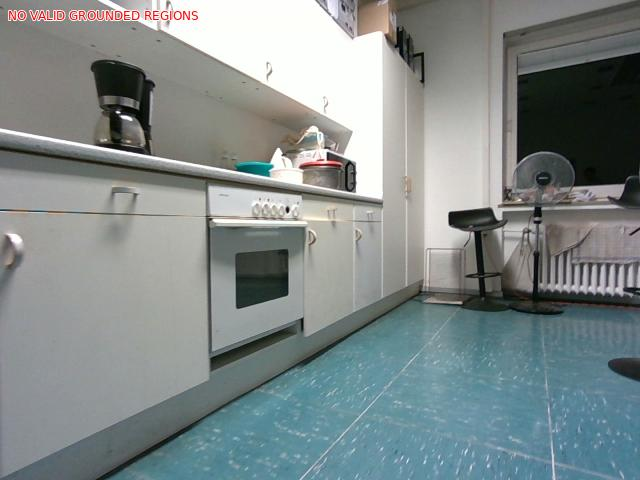

Regije niso potrjene instance. Veljaven zapis ni dokaz pravilnosti.

The image shows a modern kitchen with white cabinets and a blue tiled floor. The kitchen has a white countertop with a sink and a coffee maker on it. There is a white oven and a gas stove on the left side of the countertop. On the right side, there is a window with a view of the outside. In the center of the kitchen, there are two black bar stools and a table fan. The floor is made of blue tiles with a speckled pattern. The walls are painted white and there are a few items hanging on the wall.
Neveljaven ali prazen Florence vhod
Čas: None s; skipped
| ID | Florence oznaka / bbox | Razred | Celotna utemeljitev |
|---|